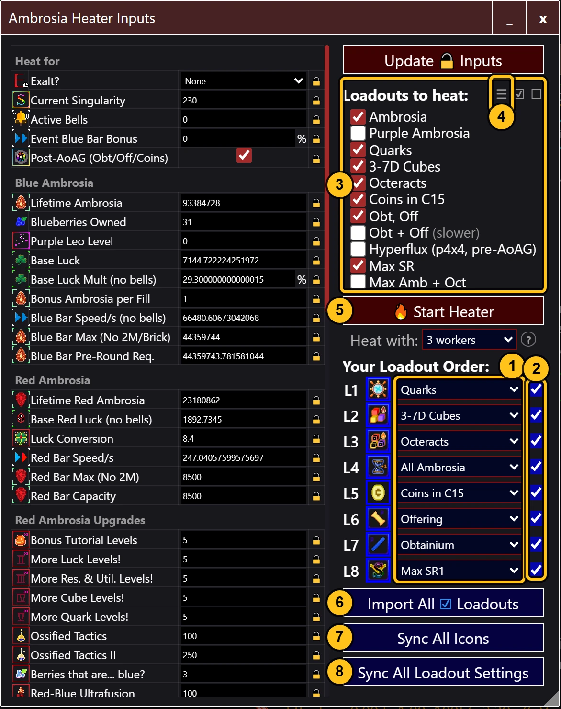
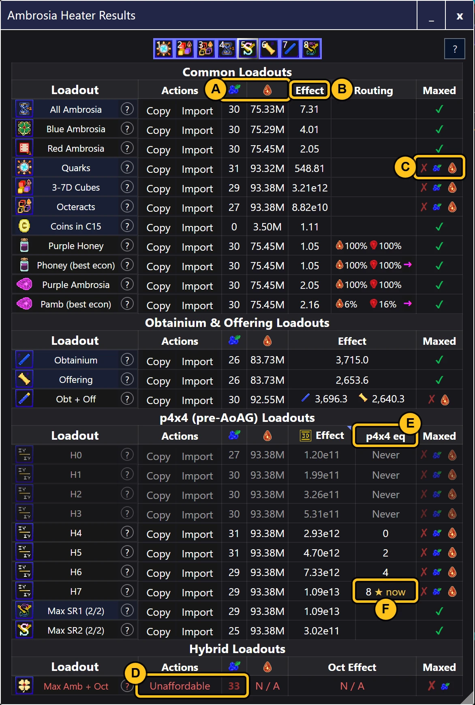
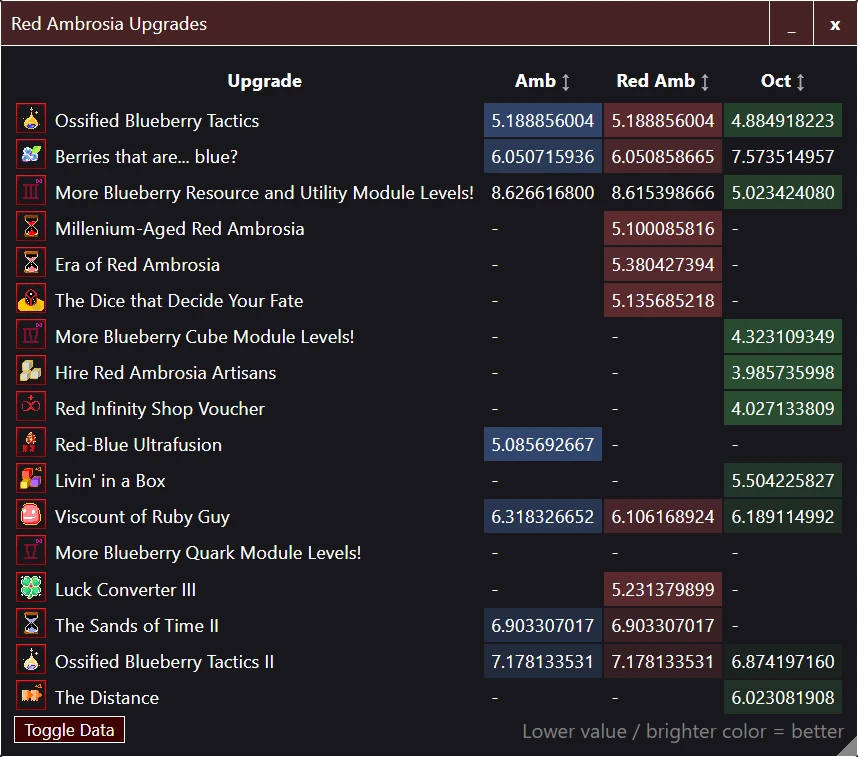

Ambrosia Heater guide
The Ambrosia Heater finds, for your save, the best Ambrosia upgrade tree for each goal: Ambrosia itself, Quarks, Cubes, Octeracts, Obtainium, Offerings and more. Then it puts those trees into your game's loadout slots. This guide walks through a first heat; every option is on the Heater's wiki page.
Open it

Open the mod panel (the mod's icon, top left), then Tools → Ambrosia Heater. The menu by the mod's icon opens it too. The Ambrosia Heater Inputs window opens, filled from your game: its left column holds what the Heater read from your save, which you rarely need to change.
Say which slot holds what
Under Your Loadout Order 1, each line is one of the game's loadout slots (L1, L2…). Pick what each slot is for: All Ambrosia, Quarks, Octeracts, an H row for cubes before AOAG… Leave a slot you don't want the Heater to touch at None.
The checkbox 2 at the end of a line says whether Import All fills that slot: untick a slot to keep its tree as it is.
Heat
- Under Loadouts to heat 3, tick what to compute. ☰ 4 at the end of that line ticks exactly what your slots need, the quickest heat. Obt + Off is slower and starts unticked.
- Click 🔥 Start Heater 5. A heat usually takes under a minute; the button counts the seconds, and ✖ next to it cancels.
Read the results

The results window opens when the heat ends. Each row is the best tree for one goal, grouped in sections: Common Loadouts, Obtainium & Offering Loadouts, p4x4 (pre-AoAG) Loadouts, Hybrid Loadouts.
- Blueberries and Ambrosia A (the two icons): what the tree costs.
- Effect B: what the tree gives for its goal.
- Maxed: ✔ means more Ambrosia or Blueberries wouldn't improve that tree. ✘ C means they would: the icon after it says which one, and hovering the ✘ shows the levels still missing.
- Unaffordable D: you can't buy that tree yet; the figure in red is what you're short of.
- Cubes before AOAG: the H0–H7 rows, one per Hyperflux level. Their p4x4 eq E is how many P4x4 you need for that row to beat the rows above it, and ★ now F marks the best one at your current P4x4.
Import them in your slots
- For one tree only: Import on its row puts it into the loadout slot currently active; Copy copies it as text, ready for a Quick Import (Ambrosia tab).
- Import All ☑ Loadouts 6 (in the Inputs window) writes each ticked slot's tree into it. A slot set to Best H (P4x4 now) gets the H row that wins at your P4x4 at that moment.
- Sync All Icons 7 gives each slot an icon that matches its role.
- Sync All Loadout Settings 8 gives your slots' roles to Auto-Sing, the ADD and TIME code loadouts and the timed export, so you don't set them by hand.
When to heat again
Heat again when your Ambrosia or Blueberries have grown, or after upgrades that change your Ambrosia luck or speed. The Heater reads your game when it opens: if its window was already open, click Update 🔓 Inputs first.
Tip
Before a big change of trees, make a backup (Tools → Backup & Restore → Export to file): your old loadouts are in it.
Pick your next Red Ambrosia upgrade

A Red Ambrosia Upgrades window opens with the results. It shows which Red Ambrosia upgrades to buy next for each resource: Amb (Ambrosia), Red Amb (Red Ambrosia) and Oct (Octeracts). Each value compares what the upgrade's next level gives for that resource with the Red Ambrosia it costs.
- Lower value, brighter colour = better: in each column, the brightest cell is the upgrade that gives the most for its cost. Read the column of the resource you're after.
- - means the upgrade doesn't help that resource.
- Click a column's header to sort the upgrades by it, best first; click again for worst first, a third time for the original order.